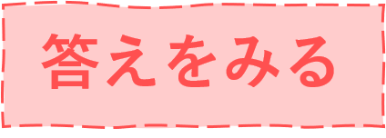

以下の質問に答えてね
クイズ①
次の（ ）にあてはまる言葉を選んでください。
ウシ科（ ）亜科の鯨偶蹄目に分類される動物です。
ウシ
ヒツジ
ヤギ
クイズ②
次の（ ）にあてはまる言葉を選んでください。
（ ）瞳孔を持ち、優れた周辺視野を持ちます。奥行きはあまり知覚できません。
水平に細い
垂直に細い
水平に太い
クイズ③
次の（ ）にあてはまる言葉を選んでください。
非常に（ ）性質をもち、引き離されると強いストレスを受けます。
仲間思いな
群れたがる
独占的な
クイズ④
次の（ ）にあてはまる言葉を選んでください。
人や他の羊の顔を何年も記憶でき、表情から（ ）を識別できます。
精神状態
害の有無
心理状態
クイズ⑤
次の（ ）にあてはまる言葉を選んでください。
オスの羊は（ ）で優位を決め、同程度のもの同士では争いが起こります。
角のサイズ
身体のサイズ
毛の多さ
クイズ⑥
次の（ ）にあてはまる言葉を選んでください。
ラムは生後1年以内の子羊の肉で、（ ）は生後2年以上の羊の肉のことをいいます。
ビーフ
シープ
マトン
